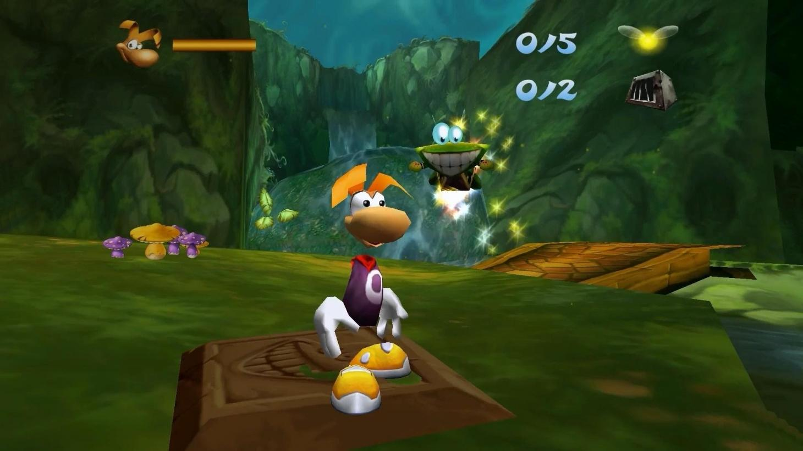

À l'attention du responsable du recrutement,
Détenteur d'un diplôme de Designer Numérique du cursus Game Design de l'ICAN à Paris, je souhaiterais rejoindre l'équipe d'Ubisoft en tant que QA Tester, et suis disponible à partir du mois de Mars.
Assassin's Creed 2
Pendant mes études j'ai pu développer un profil polyvalent en accumulant de l'expérience dans divers domaines, notamment le QA Testing avec la création de rapports de bugs via Excel, le prototypage en C# sur Unity (avec utilisation de Git quand nécessaire) ou encore la rédaction de documents de design. J'ai eu l'occasion de travailler en équipe sur divers projets tels que des jeux et mods (Glimmer, Arise, mod Slay the Spire…) à plusieurs reprises, ainsi que sur l'élaboration et l'équilibrage de niveaux qui ont pu être playtestés régulièrement (ChuChu Rocket, Megaman, Wargroove…).
Preuve de mon autonomie et envie d'apprendre, je développe mon propre Tactical RPG en solo. Portant un intérêt à de nombreux genres de jeux, je serais capable de m'adapter à tous types de projets aux côtés de collègues passionnés ayant accumulés de l'expérience dans le domaine, ce qui me semble être la meilleure façon d'améliorer mes capacités et connaissances de QA Tester polyvalent tout en contribuant à la vie du studio.

Rayman 2 The Great Escape

Beyond Good and Evil
Pour finir, si vous ne recherchez pas actuellement un QA Tester, je pourrais aussi contribuer en tant que Game Designer/Level Designer si nécessaire. Je vous remercie d'avoir lu mon message, et me tiens à votre entière disposition pour tous renseignements complémentaires. Dans l'attente de votre réponse, je vous prie d'agréer mes sincères salutations.